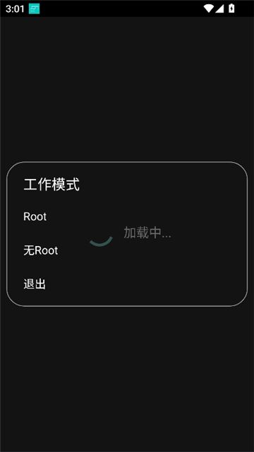

手机单机游戏数值调整工具横评：Study Tools 凭什么在同类里立得住
市面上号称能改游戏数值的工具不少，但大多要么捆绑广告、要么只支持少数几款热门游戏。Study Tools 走的是一条更克制的路线——只盯单机、不碰联网，把一件事做扎实。
先给它在同类里定个位
手机游戏修改工具这个类目，江湖上大致分三档：第一档是那种"万能修改器"，号称全网通吃，实际一联网就被秒封；第二档是针对特定热门游戏的辅助包，装完一堆脚本还得手动调参数；第三档就是 Study Tools官网 这种——把边界讲清楚，只在单机离线场景里做精做透。
我用过至少四款同类工具，最终留下来的只有它。原因很简单：它不跟你吹"防封""过检测"，也不假装支持联网对战，打开界面就明明白白告诉你——单机自娱安全放心，联网游戏别碰。这种克制反而是它最大的差异化。
两个真正做得比同类好的地方
游戏列表自动过滤——系统应用去哪了
你打开 Study Tools 会发现，主界面的游戏列表干净得出奇。没有 Android 系统进程、没有厂商预装的小米游戏中心、没有微信支付宝这些社交应用——它默认帮你筛掉了一切非游戏条目。
我对比过另外两款同类工具，一款会把手机里装的所有应用都列出来，包括十几个系统进程，找个目标游戏要翻半分钟；另一款虽然也做了过滤，但漏网率高，经常出现"com.android.settings"混在游戏列表里的情况。Study Tools 这边用了三重识别：先查 AndroidManifest 里的 GAME 分类标签，再匹配应用名和包里的游戏关键词，最后过一遍内置的游戏应用数据库——三层下来误判率很低。
这个细节看似小事，实际体验差距很大。修改工具最怕的不是功能少，是列表乱让你误选进程。误操作了系统进程轻则闪退重则变砖，而 Study Tools 从源头上把风险压到最低。
单机场景的边界划得比谁都清楚
市面上很多工具不肯说自己的边界——要么藏着掖着不提联网风险，要么给你贴一堆"防封""免检测"的标签让你放心联网用。Study Tools 反其道而行之，它在Study Tools文档里专门开了一个"联网游戏为什么别碰"的章节，把服务器校验、反作弊检测、封号风险讲得明明白白。
单机场景的数据存本地，改金币改属性本质上跟改一个本地文件没区别；联网游戏的数据在服务器，本地改的值只要触发一次校验就会被拉回真实值，反作弊还会追着你检测。这个道理很多人都懂，但很少有工具愿意把它写进自己的文档里——因为讲清楚边界就等于主动放弃了一半潜在用户。
Study Tools 偏要讲。它把这个做成了卖点：单机 = 零风险 + 随时可回退，联网 = 别碰就是别碰。这个定位筛掉了想搞事的用户，留下来的都是真心想给自己单机 RPG 加几个金币、或者在模拟经营里调点资源的人。用户画像干净了，工具本身也就不用堆那些花里胡哨的"反检测"功能。
它的取舍：为这些优势付出了什么
有得必有失。Study Tools 为了单机场景的专精，主动放弃了几块市场。
首先是联网游戏完全不支持。哪怕你说"我就改改画质参数不动数值"，它也不会给你做这个选项——干脆一刀切。对于那些既有单机内容又有联网模式的"半单机"游戏，它只在离线部分生效，联网进程直接跳过。对很多人来说这是硬伤，但从另一个角度看，这也意味着它不用在反作弊对抗上浪费任何开发资源。
其次是需要 Root 才能发挥完整能力。安装包从下载拿就行，包体不大。文档里虽然也提到了非 Root 的普通模式，但能改的参数范围窄了很多——部分游戏的存档文件只有 Root 权限才能读写。对比那些号称"免 Root""一键修改"的工具，Study Tools 没在门槛上放水。好处是改完的成功率确实高，坏处就是非 Root 机型的用户体验打了折扣。
最后是DRM 保护和内购验证的游戏改不了。某些付费单机游戏给存档加了加密，Study Tools 读不到文件；还有些表面上单机、实际关键数值要过服务器验证的"伪单机"，本地改完秒被覆盖。遇到这些情况它不会给你任何绕过方案——文档里直接写"试试 Root 模式有没有帮助，不行就认了"，干脆利落。

选购结论：什么样的人选它
如果你手里是一款纯单机 RPG、模拟经营、放置挂机或者独立游戏，想调调金币、改改角色属性、或者给模拟经营加几把资源——Study Tools 是目前这个类目里最稳妥的选择。它不会给你添广告、不会偷偷推送、改崩了直接删存档重开就行，试错成本为零。
如果你是想在联网对战里搞事、或者期待一个"万能通吃"的神器——别浪费时间，这个工具从设计上就不服务你。它的克制是双向的：它只在单机场景里做精，你也只在单机场景里用它。
我的推荐很简单：单机自娱、不想折腾、怕封号风险的，选它就对了。相关资料同步维护在三个仓库里：GitHub 主仓完整，Gitee 和 GitCode 镜像版本也方便国内访问。